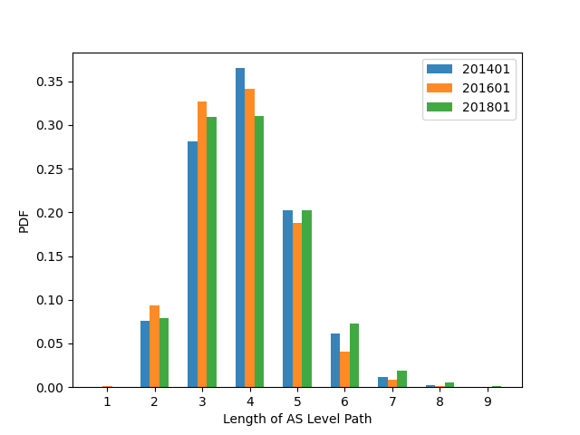
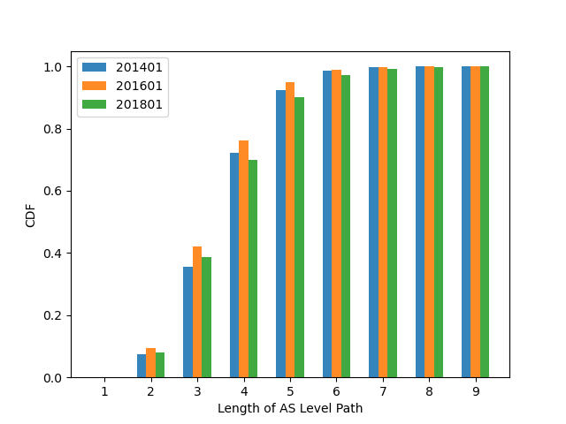
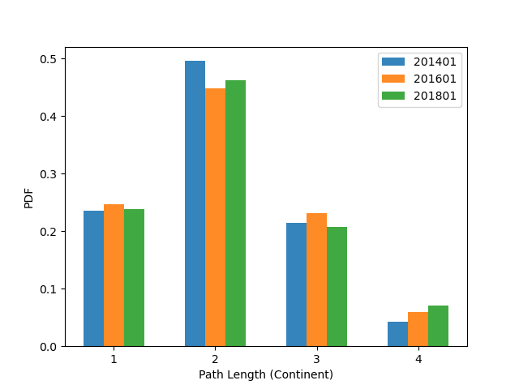
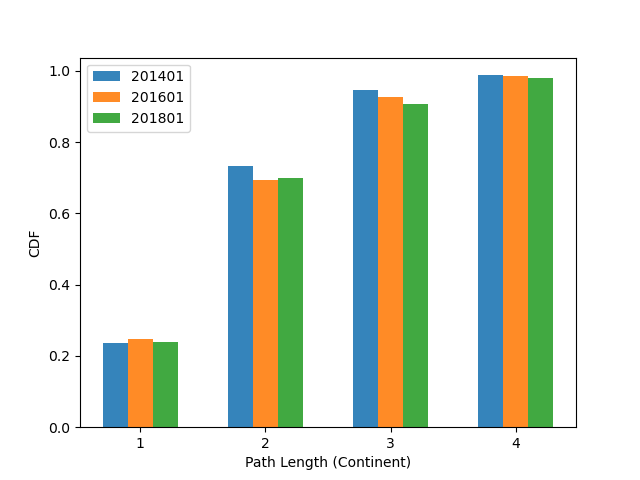
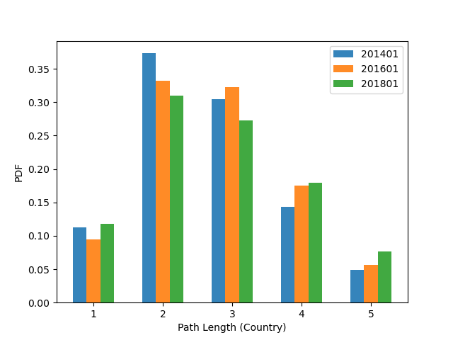
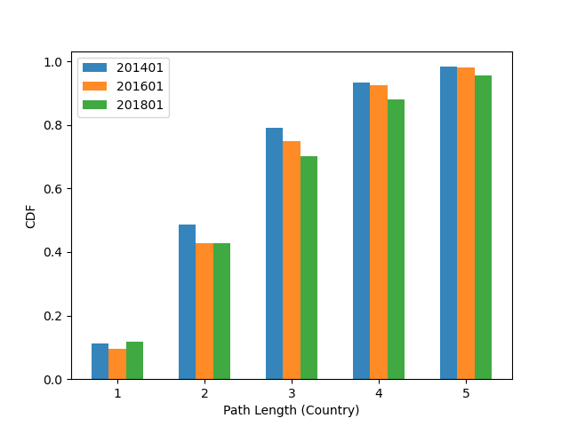
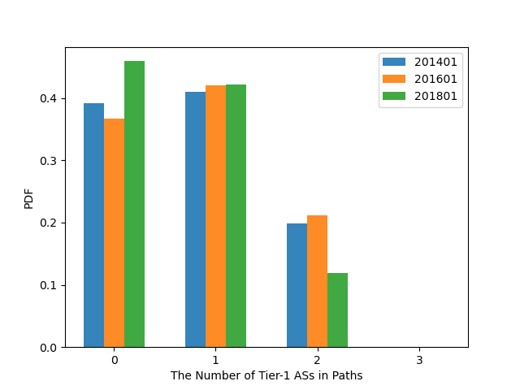
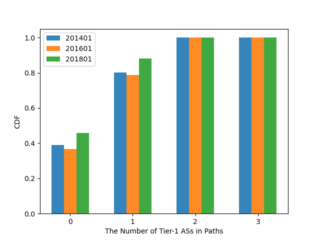

路由绕行
我们第一个所研究的问题是路由绕行的情况是怎样的。所谓的路由绕行是指，一个路由实际经过的地理路径的距离要比起点到终点距离要远。我们定义一条路径的绕行指数为这条路径实际经过的地理路径长度比上起点到终点的距离。也就是说，对于一条路径`P = (r_{1},r_{2},...,r_{n}) `而言，它的绕行指数可以通过下面的公式计算：
其中` n `代表了路径上的IP地址的数量，` r_{i} `代表了路径上第` i `个IP地址，` D(r_{i},r_{i+1}) `代表第` i `个IP地址和第` i+1 `个IP地址之间实际的地理距离，也就是大圆距离。当` R(P) `为1时，代表路径长度完全符合最优的地理距离。` R(P) `越大意味着路由的绕行情况越严重。
不同AS路径长度的绕行指数
|

|

CDF |
首先我们先定义一条路径中穿越的AS数量为这条路径的AS路径长度。上图分别展示了不同AS路径长度的路径的PDF和CDF分布。从图中可以看出大多数的路径穿越了4个不同的AS。我们可以看到这几年里分布并没有产生很大的改变。
现在我们尝试研究AS路径长度与绕行指数之间是否存在着关系。我们将路径按照AS路径的长度进行分类，对于每一年的数据集，我们计算绕行指数25、50和75百分位数的绕行指数。我们通过箱型图来展现这一结果，如上图所示每条竖线代表一个路径集合的数据，也就是说一条竖线代表某一年的某一个AS路径长度的路径的绕行指数。最顶端代表的是数据集中75百分位数的绕行指数，最低端代表25百分位数的绕行指数，竖线中间的点代表50百分位数的绕行指数，也就是中位数。
在这里，我们只关注AS路径长度在2到6的路径，因为从上图中我们可以发现AS路径长度小于2或者大于6的路径数量非常少。也就是说那些数据统计起来没有太大的意义，而且由于路径数量稀少，结果容易收到测量偏差的影响。
从上图中我们可以清晰的发现绕行指数呈现一个上涨的趋势，除了个别的例外，比如AS路径长度为3的路径集合。我们可以从两个方面来比较绕行指数：一个是研究同一年的不同AS路径长度的绕行指数；另一个是同样长度的AS路径在不同时间的绕行指数。我们得到了这两个发现：
- AS路径长度越长的路径，绕行越严重
- 在同样长度的AS路径集合中，绝大多数随着时间的推移，绕行情况变得更严重
不同洲际路径长度的绕行指数
|

|

CDF |
上图展示了不同洲际路径长度的路径的PDF和CDF分布。我们可以看出大多数的路径穿越2个大洲，几乎所有的路径从穿越的大洲数量都小于等于三个。2014-2018年数据的分布没有明显改变。
类似的，我们将三年的数据分别按照洲际路径的长度进行分类，我们做出各个集合的25、50、75百分位数的绕行指数，结果如上图所示。我们主要有以下两个发现：
- 在同一个洲的路径的绕行情况变得越来越严重，跨越两个大洲的路径的绕行情况也是变得越来越严重
- 洲际路径长度为2的路径集合中，绕行指数较小且相对稳定
不同国家路径长度的绕行指数
|

|

CDF |
上图展示了不同国家路径长度的路径的PDF和CDF分布。我们可以看出几乎没有国家路径长度超过5的路径。类似于AS路径和洲际路径，我们通过绘制箱型图来研究国家路径长度与绕行指数的关系，结果如下图所示。
我们主要观察到以下两个趋势：
- 在同一个国家内部的路径的绕行情况更为严重
- 只跨越一个国家的路径的绕行情况比较稳定，没有太大的变化
穿越不同数量Tier-1 AS的绕行指数
Tier-1的AS是互联网中规模最大的ISP，它们对于互联网的路由起着重要的作用。因此，我们想要知道路径穿越Tier-1的AS会对路径的绕行指数造成怎样的影响。
|

|

CDF |
上图展示了路径穿越Tier-1 AS的数量的PDF和CDF分布。值得注意的是，理论上不存在能够穿越三个tier-1 AS的路径，这是由BGP路由策略所决定的。我们的测量结果印证了这一结论，几乎没有路径会穿越三个及三个以上的Tier-1 AS。
上图展示了穿越Tier-1 AS的数量与绕行指数之间的关系，我们可以总结下面两个发现：
- 跨越两个Tier-1 AS的路径的绕行情况要比只跨越一个Tier-1 AS以及不跨越Tier-1 AS的路径要严重一些，但不是太多
- 无论是哪个集合绕行情况没有变得更好
穿越不同数量Tier-1 AS的绕行指数
除了研究路径长度与绕行指数之间的关系外，我们还想了解不同的洲际路径，是否绕行指数不同。我们重点关注三个大洲：欧洲、北美洲和亚洲。对于其他大洲，由于缺少大量的探测点和互联网用户，研究其他大洲很有可能收到测量偏差的严重影响。
如上图所示，展示了不同洲际路径的绕行指数。我们可以发现从亚洲到北美洲的路径，以及从欧洲到北美洲的路径具有最小的绕行指数，且在这些年一直保持稳定。剩下的四对洲际路径，有两对路径：从欧洲到北美洲、从北美洲到欧洲的路径的绕行指数明显的逐年上升，趋势是单调的。